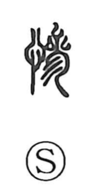

惨

Kun: mijime, itamu, itamashii, mugoi | On: san, zan
miserable ・ wretched ・ pitiful ・ cruel ・ tragic
Explanation
Originally written as 慘, this character is a phono-semantic compound: the heart element (忄/心) anchors the sense in emotion, while 參 supplies the sound, yielding the on reading san. The Shuowen glosses it as “poison,” a figurative note that captures suffering that bites into the heart, hence the idea of a grievous, pitiable state. Within this phonetic series, forms read san often carry a sorrowful, desolate resonance, reflected in compounds like hisan (tragic, pitiable), sanbi (heart-wrenching), and sansei (bleak and sad). Thus 惨 came to denote what is wretched or pitiful, and by extension the cruel extremity of pain and lament.